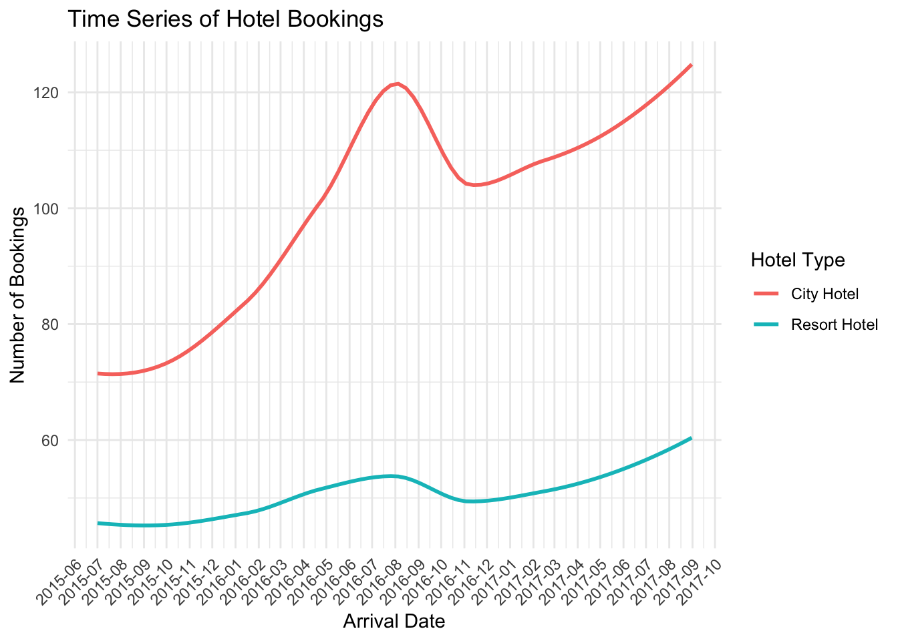
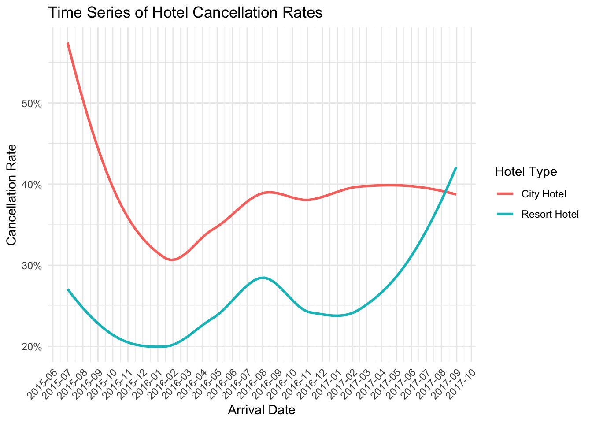
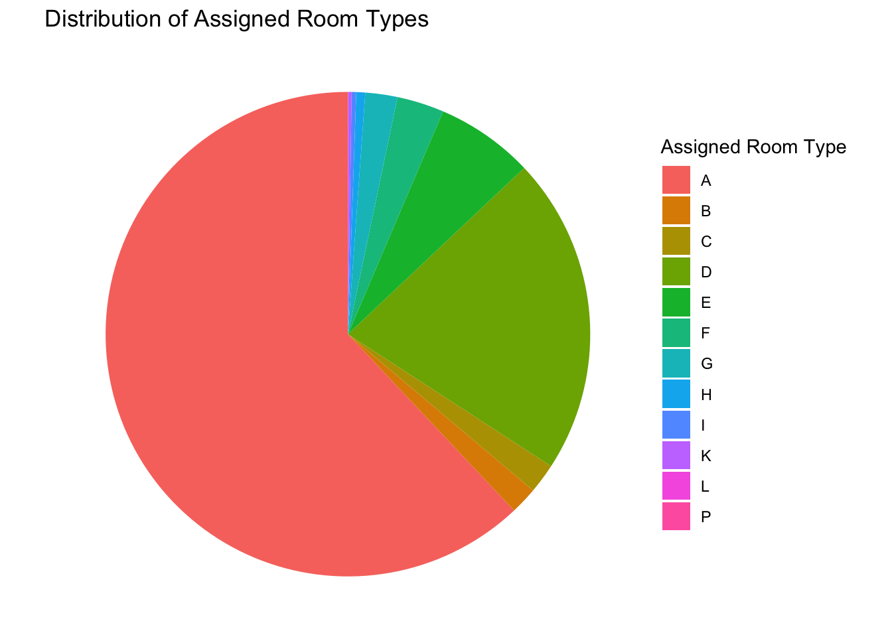
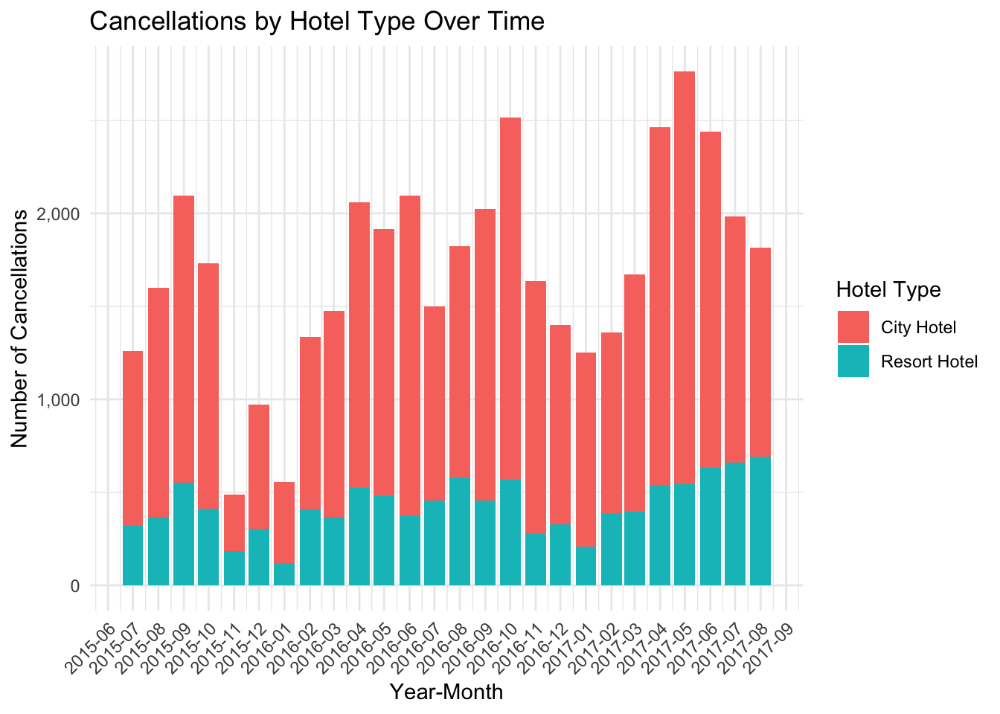

Code
library(tidyverse)
library(scales)
knitr::opts_chunk$set(echo = TRUE, warning=FALSE, message=FALSE)Zhongyue Lin
June 16, 2023
Today’s challenge is to:
Read in one (or more) of the following datasets, using the correct R package and command.
In challenge 6, I chose hotel_bookings.csv as the original dataset. This dataset is the one I used in challenge 2&4.
According to the EDA of this dataset in Challenge 2, it is understood that this dataset is about the data records of two hotels, Resort hotel and City hotel. The dataset contains customer data, business data and other related data. The data structure of this dataset is 119,390 rows 32 columns.
The code in the ‘Tidy Data’ section is an optimized version based on the code from Challenge 4. This optimization is in line with a more tidyverse-centric method, making the data cleaning process more streamlined and consistent with the principles of ‘tidy data’.
# A tibble: 4 × 32
hotel is_ca…¹ lead_…² arriv…³ arriv…⁴ arriv…⁵ arriv…⁶ stays…⁷ stays…⁸ adults
<chr> <dbl> <dbl> <dbl> <chr> <dbl> <dbl> <dbl> <dbl> <dbl>
1 City H… 1 2 2015 August 32 3 1 0 2
2 City H… 1 1 2015 August 32 5 0 2 2
3 City H… 1 1 2015 August 32 5 0 2 3
4 City H… 1 8 2015 August 33 13 2 5 2
# … with 22 more variables: children <dbl>, babies <dbl>, meal <chr>,
# country <chr>, market_segment <chr>, distribution_channel <chr>,
# is_repeated_guest <dbl>, previous_cancellations <dbl>,
# previous_bookings_not_canceled <dbl>, reserved_room_type <chr>,
# assigned_room_type <chr>, booking_changes <dbl>, deposit_type <chr>,
# agent <chr>, company <chr>, days_in_waiting_list <dbl>,
# customer_type <chr>, adr <dbl>, required_car_parking_spaces <dbl>, …In this block of code, I dealt with missing values within the dataset. I specifically targeted the ‘children’ column, using the replace_na() function to replace all missing values (NA) with 0. This is under the assumption that if the data doesn’t explicitly specify the number of children, it’s likely because no children were involved in the booking.
After the replacement operation, I conducted another check for missing values to ensure that there were no more missing values in the ‘children’ column. To achieve this, I utilized the summarize_all() function to count the number of missing values in each column of the dataset.
Based on the feedback from Challenge 4, I’ve made some modifications in this code to enhance the way the data is processed, thus improving data cleaning and handling of missing values.
# Combine year, month, and day of month into a single date column
data <- data %>%
mutate(arrival_date = as.Date(paste(arrival_date_year, arrival_date_month, arrival_date_day_of_month, sep = "-"), format = "%Y-%B-%d")) %>%
select(-arrival_date_year, -arrival_date_month, -arrival_date_week_number, -arrival_date_day_of_month)
# Convert 'is_canceled' and 'is_repeated_guest' to logical (boolean) values using case_when()
data <- data %>%
mutate(is_canceled = case_when(is_canceled == 1 ~ TRUE,
is_canceled == 0 ~ FALSE),
is_repeated_guest = case_when(is_repeated_guest == 1 ~ TRUE,
is_repeated_guest == 0 ~ FALSE))
# Print unique values of categorical variables
unique_values <- data %>%
select(hotel, meal, country, market_segment, distribution_channel, reserved_room_type, assigned_room_type, deposit_type, customer_type, reservation_status) %>%
sapply(unique)
print(unique_values)$hotel
[1] "Resort Hotel" "City Hotel"
$meal
[1] "BB" "FB" "HB" "SC" "Undefined"
$country
[1] "PRT" "GBR" "USA" "ESP" "IRL" "FRA" "NULL" "ROU" "NOR" "OMN"
[11] "ARG" "POL" "DEU" "BEL" "CHE" "CN" "GRC" "ITA" "NLD" "DNK"
[21] "RUS" "SWE" "AUS" "EST" "CZE" "BRA" "FIN" "MOZ" "BWA" "LUX"
[31] "SVN" "ALB" "IND" "CHN" "MEX" "MAR" "UKR" "SMR" "LVA" "PRI"
[41] "SRB" "CHL" "AUT" "BLR" "LTU" "TUR" "ZAF" "AGO" "ISR" "CYM"
[51] "ZMB" "CPV" "ZWE" "DZA" "KOR" "CRI" "HUN" "ARE" "TUN" "JAM"
[61] "HRV" "HKG" "IRN" "GEO" "AND" "GIB" "URY" "JEY" "CAF" "CYP"
[71] "COL" "GGY" "KWT" "NGA" "MDV" "VEN" "SVK" "FJI" "KAZ" "PAK"
[81] "IDN" "LBN" "PHL" "SEN" "SYC" "AZE" "BHR" "NZL" "THA" "DOM"
[91] "MKD" "MYS" "ARM" "JPN" "LKA" "CUB" "CMR" "BIH" "MUS" "COM"
[101] "SUR" "UGA" "BGR" "CIV" "JOR" "SYR" "SGP" "BDI" "SAU" "VNM"
[111] "PLW" "QAT" "EGY" "PER" "MLT" "MWI" "ECU" "MDG" "ISL" "UZB"
[121] "NPL" "BHS" "MAC" "TGO" "TWN" "DJI" "STP" "KNA" "ETH" "IRQ"
[131] "HND" "RWA" "KHM" "MCO" "BGD" "IMN" "TJK" "NIC" "BEN" "VGB"
[141] "TZA" "GAB" "GHA" "TMP" "GLP" "KEN" "LIE" "GNB" "MNE" "UMI"
[151] "MYT" "FRO" "MMR" "PAN" "BFA" "LBY" "MLI" "NAM" "BOL" "PRY"
[161] "BRB" "ABW" "AIA" "SLV" "DMA" "PYF" "GUY" "LCA" "ATA" "GTM"
[171] "ASM" "MRT" "NCL" "KIR" "SDN" "ATF" "SLE" "LAO"
$market_segment
[1] "Direct" "Corporate" "Online TA" "Offline TA/TO"
[5] "Complementary" "Groups" "Undefined" "Aviation"
$distribution_channel
[1] "Direct" "Corporate" "TA/TO" "Undefined" "GDS"
$reserved_room_type
[1] "C" "A" "D" "E" "G" "F" "H" "L" "P" "B"
$assigned_room_type
[1] "C" "A" "D" "E" "G" "F" "I" "B" "H" "P" "L" "K"
$deposit_type
[1] "No Deposit" "Refundable" "Non Refund"
$customer_type
[1] "Transient" "Contract" "Transient-Party" "Group"
$reservation_status
[1] "Check-Out" "Canceled" "No-Show" # Convert categorical variables into factors
data <- data %>%
mutate_at(vars(hotel, meal, country, market_segment, distribution_channel, reserved_room_type, assigned_room_type, deposit_type, customer_type, reservation_status),
factor)
# Print the first few rows of the data to verify transformations
head(data)In this code snippet, I first merge three separate date columns (year, month, day) into a new ‘arrival_date’ column using paste() and as.Date(). I then remove the original date columns as they’re no longer needed.
Next, I convert two integer columns, ‘is_canceled’ and ‘is_repeated_guest’, to logical (boolean) values for easier interpretation and manipulation, using case_when().
I then print unique values of some categorical variables to check for any inconsistencies, and convert these categorical variables into factors for further analysis and visualization using mutate_at() and vars().
Finally, I print the first few rows of the dataset to confirm all transformations were applied correctly.
arrival_date
# Create a new dataframe that counts the number of bookings per date for each hotel
data_count <- data %>%
group_by(arrival_date, hotel) %>%
summarise(bookings = n(), .groups = "drop") # prevent warning message
# Create a smoothed time series plot of hotel bookings
ggplot(data_count, aes(x = arrival_date, y = bookings, color = hotel)) +
geom_smooth(se = FALSE, size = 1) + # se = FALSE removes the confidence interval around the line
scale_x_date(labels = date_format("%Y-%m"), breaks = "1 months") +
scale_y_continuous(labels = scales::comma) +
labs(x = "Arrival Date", y = "Number of Bookings",
color = "Hotel Type",
title = "Time Series of Hotel Bookings") +
theme_minimal() +
theme(axis.text.x = element_text(angle = 45, hjust = 1))
In this code, I created a new dataframe data_count which counts the number of bookings each day for each hotel.
Afterward, I generated a plot using the ggplot() function. In this plot, the x-axis is the arrival date, the y-axis is the number of bookings, and the color differentiates between different hotels. I utilized the geom_smooth() function to draw a smoothed line to better show the trend over time.
Next, I adjusted the format of the x-axis and y-axis labels to make them more understandable using scale_x_date() and scale_y_continuous(). Also, I added the title and labels for the plot with the labs() function.
Finally, I adjusted the theme and style of the plot using theme_minimal() and theme() functions. I chose a minimalist theme and tilted the x-axis labels by 45 degrees for a clearer date display.
The resulting plot displays the trends of hotel bookings over time, which will help me understand the booking behaviors of customers and the operational status of the hotels.
cancellation_rate
# Create a new dataframe that calculates the cancellation rate per date for each hotel
data_cancel_rate <- data %>%
group_by(arrival_date, hotel) %>%
summarise(cancel_rate = mean(is_canceled), .groups = "drop") # prevent warning message
# Create a smoothed time series plot of cancellation rate
ggplot(data_cancel_rate, aes(x = arrival_date, y = cancel_rate, color = hotel)) +
geom_smooth(se = FALSE, size = 1) + # se = FALSE removes the confidence interval around the line
scale_x_date(labels = date_format("%Y-%m"), breaks = "1 months") +
scale_y_continuous(labels = scales::percent) +
labs(x = "Arrival Date", y = "Cancellation Rate",
color = "Hotel Type",
title = "Time Series of Hotel Cancellation Rates") +
theme_minimal() +
theme(axis.text.x = element_text(angle = 45, hjust = 1))
room types
# Create a dataframe that counts the number of each room type
room_count <- data %>%
group_by(assigned_room_type) %>%
summarise(count = n(), .groups = "drop")
# Create a pie chart of assigned room types
ggplot(room_count, aes(x = "", y = count, fill = assigned_room_type)) +
geom_bar(width = 1, stat = "identity") +
coord_polar("y", start = 0) +
theme_void() +
labs(fill = "Assigned Room Type",
title = "Distribution of Assigned Room Types",
x = NULL, y = NULL)
In this code, I first create a new dataframe room_count which counts the number of each assigned room type.
Afterward, I generate a pie chart using the ggplot() function, where the fill aesthetic is mapped to the room type and the size of each slice (y-axis) is determined by the count of each room type. I use geom_bar() with stat = “identity” to create the pie chart and coord_polar() to convert the bar chart to a pie chart.
Finally, I remove the axes and grid lines with theme_void() for a cleaner look and add labels and a title with labs(). The resulting plot displays the distribution of assigned room types, which will help me understand the occupancy situation of different room types.
# First, we need to extract the year and month from the 'arrival_date' column
data <- data %>%
mutate(year_month = paste(format(arrival_date, "%Y-%m"), "-01", sep = ""))
# Create a new dataframe that counts the number of cancellations per month for each hotel
data_cancel <- data %>%
filter(is_canceled == TRUE) %>%
group_by(year_month, hotel) %>%
summarise(cancelations = n(), .groups = "drop")
# Create a stacked bar chart of cancellations
ggplot(data_cancel, aes(x = as.Date(year_month), y = cancelations, fill = hotel)) +
geom_bar(stat = "identity", position = "stack") +
scale_x_date(date_labels = "%Y-%m", date_breaks = "1 month") +
scale_y_continuous(labels = scales::comma) +
labs(x = "Year-Month", y = "Number of Cancellations",
fill = "Hotel Type",
title = "Cancellations by Hotel Type Over Time") +
theme_minimal() +
theme(axis.text.x = element_text(angle = 45, hjust = 1))
In this code, I first prepared a dataframe to represent the count of monthly booking cancellations for each hotel. This was achieved by filtering rows where is_canceled was TRUE, transforming the arrival_date into a Year-Month format using mutate() and format(), and subsequently grouping and summarising the data to provide the number of cancellations per month for each hotel.
Following data preparation, I used the ggplot() function to create a stacked bar chart that depicted the number of booking cancellations over time, with color coding to differentiate between hotel types. The aesthetic mapping (aes()) was defined with arrival_month on the x-axis, cancelations on the y-axis, and hotel defining the fill color. The bars were created using the geom_bar() function with stat = "identity", allowing for the actual cancellation values to be plotted on the y-axis, and position = "stack" facilitating a stacked representation of cancellation counts for the different hotels.
To ensure readability, I controlled the x-axis ticks using scale_x_discrete(), setting a label every three months to avoid clutter. Similarly, the y-axis tick labels were made more readable by using scales::comma within the scale_y_continuous() function.
The chart’s title and labels for the x-axis, y-axis, and fill color were defined using labs(). Lastly, I utilized theme_minimal() for a clean look and adjusted the x-axis labels’ angle to 45 degrees using element_text(angle = 45, hjust = 1) within the theme() function, preventing any label overlap.
---
title: "Challenge6_Solution"
author: "Zhongyue Lin"
description: "Visualizing Time and Relationships"
date: "6/16/2023"
format:
html:
df-print: paged
toc: true
code-fold: true
code-copy: true
code-tools: true
categories:
- challenge_6
- hotel_bookings
---
```{r}
#| label: setup
#| warning: false
#| message: false
library(tidyverse)
library(scales)
knitr::opts_chunk$set(echo = TRUE, warning=FALSE, message=FALSE)
```
## Challenge Overview
Today's challenge is to:
1) read in a data set, and describe the data set using both words and any supporting information (e.g., tables, etc)
2) tidy data (as needed, including sanity checks)
3) mutate variables as needed (including sanity checks)
4) create at least one graph including time (evolution)
- try to make them "publication" ready (optional)
- Explain why you choose the specific graph type
5) Create at least one graph depicting part-whole or flow relationships
- try to make them "publication" ready (optional)
- Explain why you choose the specific graph type
## Read in data
Read in one (or more) of the following datasets, using the correct R package and command.
- hotel_bookings.csv⭐⭐⭐⭐
In challenge 6, I chose hotel_bookings.csv as the original dataset. This dataset is the one I used in challenge 2&4.
```{r}
data <- readr::read_csv("_data/hotel_bookings.csv")
head(data)
```
### Briefly describe the data
According to the EDA of this dataset in Challenge 2, it is understood that this dataset is about the data records of two hotels, **Resort hotel** and **City hotel**. The dataset contains customer data, business data and other related data. The data structure of this dataset is **119,390** rows **32** columns.
## Tidy Data (as needed)
The code in the 'Tidy Data' section is an optimized version based on the code from Challenge 4. This optimization is in line with a more tidyverse-centric method, making the data cleaning process more streamlined and consistent with the principles of 'tidy data'.
```{r}
# Checking for missing values in each column
data %>%
summarize_all(~sum(is.na(.)))
# Identifying rows with missing data
missing_rows_index <- which(apply(data, 1, anyNA))
# Print out rows with missing values
missing_rows <- data[missing_rows_index, ]
print(missing_rows)
```
```{r}
# Replace missing values in the 'children' column with 0 using replace_na()
data <- data %>%
replace_na(list(children = 0))
# Check again for missing values to confirm replacement
data %>%
summarize_all(~sum(is.na(.)))
```
In this block of code, I dealt with missing values within the dataset. I specifically targeted the 'children' column, using the `replace_na()` function to replace all missing values (NA) with 0. This is under the assumption that if the data doesn't explicitly specify the number of children, it's likely because no children were involved in the booking.
After the replacement operation, I conducted another check for missing values to ensure that there were no more missing values in the 'children' column. To achieve this, I utilized the `summarize_all()` function to count the number of missing values in each column of the dataset.
Based on the feedback from Challenge 4, I've made some modifications in this code to enhance the way the data is processed, thus improving data cleaning and handling of missing values.
```{r}
# Combine year, month, and day of month into a single date column
data <- data %>%
mutate(arrival_date = as.Date(paste(arrival_date_year, arrival_date_month, arrival_date_day_of_month, sep = "-"), format = "%Y-%B-%d")) %>%
select(-arrival_date_year, -arrival_date_month, -arrival_date_week_number, -arrival_date_day_of_month)
# Convert 'is_canceled' and 'is_repeated_guest' to logical (boolean) values using case_when()
data <- data %>%
mutate(is_canceled = case_when(is_canceled == 1 ~ TRUE,
is_canceled == 0 ~ FALSE),
is_repeated_guest = case_when(is_repeated_guest == 1 ~ TRUE,
is_repeated_guest == 0 ~ FALSE))
# Print unique values of categorical variables
unique_values <- data %>%
select(hotel, meal, country, market_segment, distribution_channel, reserved_room_type, assigned_room_type, deposit_type, customer_type, reservation_status) %>%
sapply(unique)
print(unique_values)
# Convert categorical variables into factors
data <- data %>%
mutate_at(vars(hotel, meal, country, market_segment, distribution_channel, reserved_room_type, assigned_room_type, deposit_type, customer_type, reservation_status),
factor)
# Print the first few rows of the data to verify transformations
head(data)
```
In this code snippet, I first merge three separate date columns (year, month, day) into a new 'arrival_date' column using `paste()` and `as.Date()`. I then remove the original date columns as they're no longer needed.
Next, I convert two integer columns, 'is_canceled' and 'is_repeated_guest', to logical (boolean) values for easier interpretation and manipulation, using `case_when()`.
I then print unique values of some categorical variables to check for any inconsistencies, and convert these categorical variables into factors for further analysis and visualization using `mutate_at()` and `vars()`.
Finally, I print the first few rows of the dataset to confirm all transformations were applied correctly.
## Time Dependent Visualization
`arrival_date`
```{r}
# Create a new dataframe that counts the number of bookings per date for each hotel
data_count <- data %>%
group_by(arrival_date, hotel) %>%
summarise(bookings = n(), .groups = "drop") # prevent warning message
# Create a smoothed time series plot of hotel bookings
ggplot(data_count, aes(x = arrival_date, y = bookings, color = hotel)) +
geom_smooth(se = FALSE, size = 1) + # se = FALSE removes the confidence interval around the line
scale_x_date(labels = date_format("%Y-%m"), breaks = "1 months") +
scale_y_continuous(labels = scales::comma) +
labs(x = "Arrival Date", y = "Number of Bookings",
color = "Hotel Type",
title = "Time Series of Hotel Bookings") +
theme_minimal() +
theme(axis.text.x = element_text(angle = 45, hjust = 1))
```
In this code, I created a new dataframe `data_count` which counts the number of bookings each day for each hotel.
Afterward, I generated a plot using the `ggplot()` function. In this plot, the x-axis is the arrival date, the y-axis is the number of bookings, and the color differentiates between different hotels. I utilized the `geom_smooth()` function to draw a smoothed line to better show the trend over time.
Next, I adjusted the format of the x-axis and y-axis labels to make them more understandable using `scale_x_date()` and `scale_y_continuous()`. Also, I added the title and labels for the plot with the `labs()` function.
Finally, I adjusted the theme and style of the plot using `theme_minimal()` and `theme()` functions. I chose a minimalist theme and tilted the x-axis labels by 45 degrees for a clearer date display.
The resulting plot displays the trends of hotel bookings over time, which will help me understand the booking behaviors of customers and the operational status of the hotels.
`cancellation_rate`
```{r}
# Create a new dataframe that calculates the cancellation rate per date for each hotel
data_cancel_rate <- data %>%
group_by(arrival_date, hotel) %>%
summarise(cancel_rate = mean(is_canceled), .groups = "drop") # prevent warning message
# Create a smoothed time series plot of cancellation rate
ggplot(data_cancel_rate, aes(x = arrival_date, y = cancel_rate, color = hotel)) +
geom_smooth(se = FALSE, size = 1) + # se = FALSE removes the confidence interval around the line
scale_x_date(labels = date_format("%Y-%m"), breaks = "1 months") +
scale_y_continuous(labels = scales::percent) +
labs(x = "Arrival Date", y = "Cancellation Rate",
color = "Hotel Type",
title = "Time Series of Hotel Cancellation Rates") +
theme_minimal() +
theme(axis.text.x = element_text(angle = 45, hjust = 1))
```
## Visualizing Part-Whole Relationships
`room types`
```{r}
# Create a dataframe that counts the number of each room type
room_count <- data %>%
group_by(assigned_room_type) %>%
summarise(count = n(), .groups = "drop")
# Create a pie chart of assigned room types
ggplot(room_count, aes(x = "", y = count, fill = assigned_room_type)) +
geom_bar(width = 1, stat = "identity") +
coord_polar("y", start = 0) +
theme_void() +
labs(fill = "Assigned Room Type",
title = "Distribution of Assigned Room Types",
x = NULL, y = NULL)
```
In this code, I first create a new dataframe room_count which counts the number of each assigned room type.
Afterward, I generate a pie chart using the `ggplot()` function, where the fill aesthetic is mapped to the room type and the size of each slice (y-axis) is determined by the count of each room type. I use `geom_bar()` with stat = "identity" to create the pie chart and `coord_polar()` to convert the bar chart to a pie chart.
Finally, I remove the axes and grid lines with `theme_void()` for a cleaner look and add labels and a title with `labs()`. The resulting plot displays the distribution of assigned room types, which will help me understand the occupancy situation of different room types.
```{r}
# First, we need to extract the year and month from the 'arrival_date' column
data <- data %>%
mutate(year_month = paste(format(arrival_date, "%Y-%m"), "-01", sep = ""))
# Create a new dataframe that counts the number of cancellations per month for each hotel
data_cancel <- data %>%
filter(is_canceled == TRUE) %>%
group_by(year_month, hotel) %>%
summarise(cancelations = n(), .groups = "drop")
# Create a stacked bar chart of cancellations
ggplot(data_cancel, aes(x = as.Date(year_month), y = cancelations, fill = hotel)) +
geom_bar(stat = "identity", position = "stack") +
scale_x_date(date_labels = "%Y-%m", date_breaks = "1 month") +
scale_y_continuous(labels = scales::comma) +
labs(x = "Year-Month", y = "Number of Cancellations",
fill = "Hotel Type",
title = "Cancellations by Hotel Type Over Time") +
theme_minimal() +
theme(axis.text.x = element_text(angle = 45, hjust = 1))
```
In this code, I first prepared a dataframe to represent the count of monthly booking cancellations for each hotel. This was achieved by filtering rows where `is_canceled` was `TRUE`, transforming the `arrival_date` into a Year-Month format using `mutate()` and `format()`, and subsequently grouping and summarising the data to provide the number of cancellations per month for each hotel.
Following data preparation, I used the `ggplot()` function to create a stacked bar chart that depicted the number of booking cancellations over time, with color coding to differentiate between hotel types. The aesthetic mapping (`aes()`) was defined with `arrival_month` on the x-axis, `cancelations` on the y-axis, and `hotel` defining the fill color. The bars were created using the `geom_bar()` function with `stat = "identity"`, allowing for the actual cancellation values to be plotted on the y-axis, and `position = "stack"` facilitating a stacked representation of cancellation counts for the different hotels.
To ensure readability, I controlled the x-axis ticks using `scale_x_discrete()`, setting a label every three months to avoid clutter. Similarly, the y-axis tick labels were made more readable by using `scales::comma` within the `scale_y_continuous()` function.
The chart's title and labels for the x-axis, y-axis, and fill color were defined using `labs()`. Lastly, I utilized `theme_minimal()` for a clean look and adjusted the x-axis labels' angle to 45 degrees using `element_text(angle = 45, hjust = 1)` within the `theme()` function, preventing any label overlap.